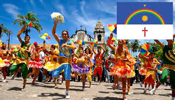
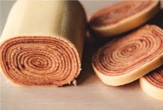
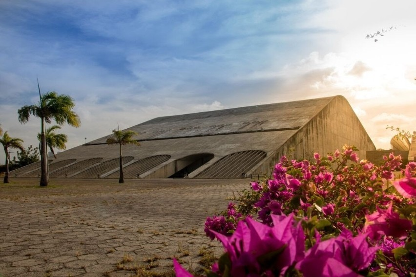

Selecione um tema abaixo para mais detalhes:
Clique para saber mais sobre a rica história de Pernambuco.
Descubra as tradições que mantêm a cultura viva.
Explore os sabores únicos da culinária pernambucana.
Saiba mais sobre os eventos culturais e projetos locais.
Os principais pontos turísticos de Pernambuco incluem Recife, com o Marco Zero e o Paço do Frevo; Olinda, com seu centro histórico e igrejas barrocas; Porto de Galinhas, com suas praias e piscinas naturais; Fernando de Noronha, famoso pelas suas praias e mergulhos; e Caruaru, conhecida pela Feira de Caruaru e o Museu do Barro.
A cultura pernambucana é marcada pela mistura de influências indígenas, africanas e europeias, refletidas no frevo, maracatu, forró, coco de roda e na culinária, com pratos como bolo de rolo e feijoada.
As festas tradicionais incluem o Carnaval de Recife e Olinda, em fevereiro ou março, o Festival de São João em junho e a Festa de Nossa Senhora da Conceição em dezembro.
O frevo é uma dança e música típica de Pernambuco, com ritmos rápidos e contagiantes, sendo um símbolo do carnaval e considerado Patrimônio Cultural Imaterial da Humanidade.